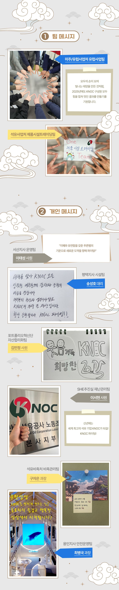

2025년 을사년, 푸른 뱀의 해가 밝았습니다! 푸른 색은 생명과 활기를,
뱀은 뛰어난 통찰력과 직관력을 지닌 동물을 상징하죠. 청색과 뱀이
만난 올해는 왠지 새로운 시작과 성장, 발전이 기다리고 있을 것만
같은 기분이 듭니다. 가슴 두근거리는 새해를 맞아 각자의 설렘과
서로를 향한 응원의 메시지를 독자 여러분과 나누기 위해 한국석유공사
임직원의 진심을 모아보았습니다.
귀여운 메시지부터 회사의 발전과 성장을 기원하는 진중한 메시지,
그리고 사진까지! 참여해주신 많은 분들의 아이디어 중 몇 가지를
어렵게 골라 소개해드립니다!
참여해주신 모든 분들과 독자 여러분께도 힘찬 기운이 전해지길
바라요!
